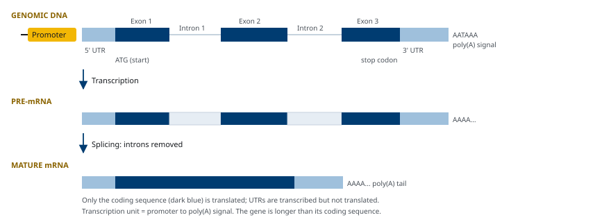
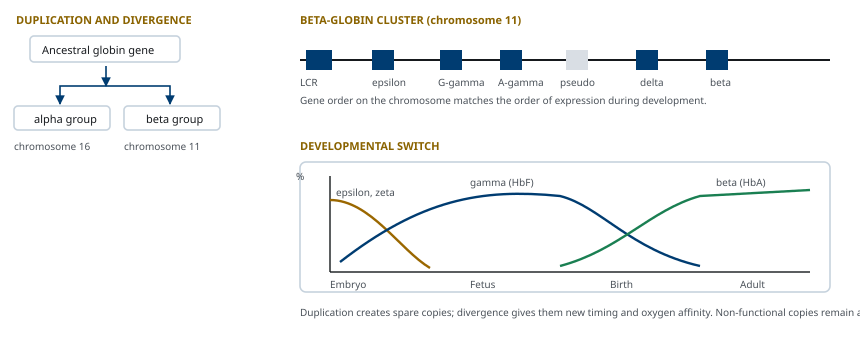
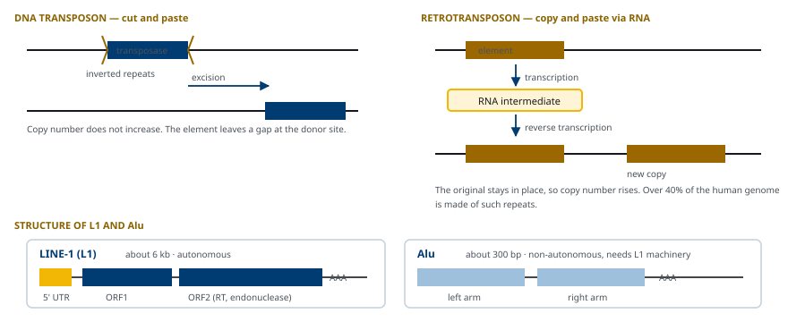
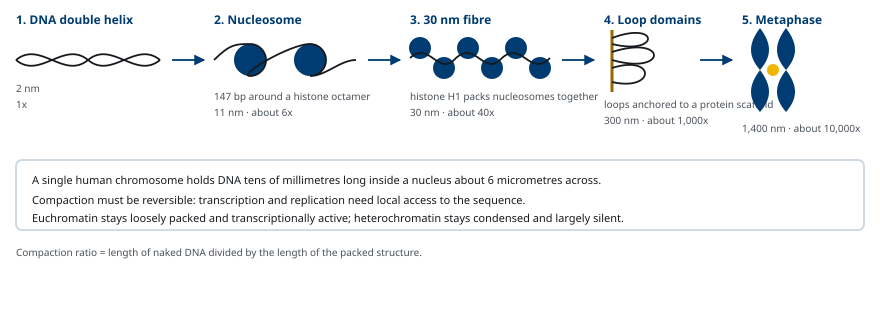
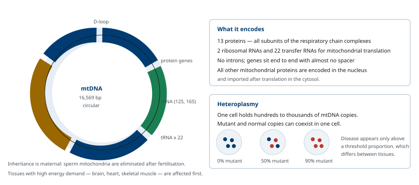

M01-W06-L02 · 인체일반생물학과 기초세포생물학
유전자와 유전체의 구성
Genes and Genomes
학습목표
- 유전자의 정의가 "하나의 유전자, 하나의 효소"에서 전사 단위로 확장된 과정을 설명한다.
- Intron의 발견 실험을 설명하고 intron이 있는 유전자의 구조를 전사 단위 지도로 그린다.
- 유전자 중복이 유전자 가족과 pseudogene을 만드는 과정을 globin 유전자군의 배치로 설명한다.
- 반복 서열을 단순 반복과 산재성 반복으로 나누고 각각의 생성 기전과 유전체 비율을 든다.
- DNA transposon과 retrotransposon의 전이 기전을 구분하고 사람 유전체에서 LINE과 SINE의 역할을 설명한다.
- Nucleosome에서 중기 염색체까지의 응축 단계를 수치와 함께 설명하고 euchromatin과 heterochromatin을 구분한다.
- 염색체가 작동하기 위해 필요한 세 가지 서열 요소를 들고 각각의 기능을 설명한다.
- 미토콘드리아 유전체의 크기와 암호화 내용을 설명하고 핵 유전체와의 차이를 든다.
선수지식
- M01-W05-L03 유전정보의 흐름: 복제·전사·번역 — 전사 단위, mRNA 가공, 유전암호
- M01-W06-L01 재조합 DNA와 분자생물학 실험 기법 — 염기서열 분석, hybridization, 유전체 library
- M01-W05-L02 생체분자와 막의 구조 — DNA의 이중나선 구조와 염기쌍
1. 유전자의 정의와 전사 단위로서의 구조
유전자(gene)의 정의는 측정 수단이 바뀔 때마다 확장되었다. Mendel에게 유전자는 형질을 결정하는 추상적 인자였다. Beadle과 Tatum이 *Neurospora*의 영양 요구성 돌연변이체를 분석해 한 돌연변이가 한 대사 단계를 막는다는 결과를 얻은 뒤, 유전자는 "하나의 유전자, 하나의 효소"로 정의되었다. 이후 hemoglobin처럼 효소가 아닌 단백질, 그리고 여러 subunit로 이루어진 단백질이 알려지면서 정의는 "하나의 유전자, 하나의 polypeptide"로 바뀌었다.
현재 쓰는 정의는 기능을 가진 RNA 산물을 만드는 전사 단위다. 이 정의로 바뀐 이유는 세 가지다. 첫째, rRNA와 tRNA처럼 단백질로 번역되지 않는 산물을 만드는 유전자가 있다. 둘째, 대체 splicing으로 한 전사 단위가 여러 polypeptide를 만든다. 셋째, 전사되지 않는 조절 서열을 유전자의 일부로 볼지가 논점이 된다.
Eukaryotic 단백질 암호화 유전자의 전사 단위는 다음 요소로 이루어진다.
- Core promoter 전사 개시 복합체가 자리 잡는 위치. 전사 시작점을 정한다.
- 5′ untranslated region(5′ UTR) 전사되지만 번역되지 않는 선두 구간. 번역 개시 효율에 관여한다.
- Exon과 intron exon은 성숙 mRNA에 남고 intron은 splicing으로 제거된다.
- Coding sequence 개시 codon에서 종결 codon까지. 번역된다.
- 3′ UTR 종결 codon 뒤의 구간. mRNA 안정성과 국소화, microRNA 결합 부위를 담는다.
- Polyadenylation signal poly(A) 부가 위치를 지정한다.

사람 유전자의 평균 길이는 약 27 kb이지만 암호화 서열은 평균 1.3 kb다. 즉 전사 단위의 대부분이 intron이다. 유전자 사이의 거리도 균일하지 않다. 유전자 밀도가 높은 염색체 구간(예: 19번 염색체)과 유전자가 거의 없는 구간(gene desert)이 교대로 나타난다. 조절 서열은 전사 시작점 근처에만 있지 않고 수십에서 수백 kb 떨어진 곳에도 놓인다.
2. Intron과 exon
유전체의 구성 방식은 prokaryote와 eukaryote에서 근본적으로 다르다. 세균의 유전체는 약 4.6 Mb(E. coli)에 약 4,300개의 유전자가 들어 있어 1 kb당 거의 한 개의 밀도이고, 기능적으로 연관된 유전자들이 한 promoter 아래 묶여 하나의 mRNA로 전사되는 operon을 이룬다. 사람 유전체는 3.1 Gb에 단백질 암호화 유전자가 약 19,000~20,000개뿐이어서 150 kb당 한 개 수준이고, 각 유전자가 자기 promoter를 갖는 monocistronic 구조다. 유전자 사이의 긴 간격이 조절 서열과 반복 서열로 채워져 있다는 것이 eukaryotic 유전체의 가장 두드러진 특징이다.
"사람의 유전자는 몇 개인가"라는 질문의 답이 자료마다 다른 이유도 정의에 있다. 단백질 암호화 유전자는 약 2만 개로 수렴했지만, 기능성 RNA를 만드는 유전자를 포함하면 6만 개를 넘는다. GENCODE 주석에는 단백질 암호화 유전자 약 2만, long non-coding RNA 유전자 약 1만 9천, small RNA 유전자 수천, pseudogene 약 1만 5천이 올라 있다. 세어지는 대상이 다르므로, 숫자를 볼 때는 무엇을 유전자로 세었는지를 먼저 확인해야 한다. 유전자의 이름은 HGNC가 정한 기호를 쓰고, 사람 유전자는 대문자 이탤릭(HBB), 단백질은 정체 대문자(HBB), 쥐 유전자는 첫 글자만 대문자(Hbb)로 적는 관행이 있다.
Prokaryote의 유전자는 암호화 서열이 끊기지 않고 이어진다. Eukaryote에서도 그러할 것이라고 가정되었으나 1977년에 두 집단이 adenovirus의 mRNA와 유전체 DNA를 hybridization시켜 전자 현미경으로 관찰한 결과, mRNA에 대응하지 않고 고리로 삐져나오는 DNA 구간이 나타났다. mRNA가 유전체의 떨어진 여러 구간에 나뉘어 대응했다는 뜻이었다. 성숙 mRNA에 남는 구간을 exon, 제거되는 구간을 intron이라 이름 붙였다.
R-loop 관찰에 이어 S1 nuclease mapping과 서열 비교가 같은 결론을 주었다. 단일가닥 DNA를 분해하는 S1 nuclease로 mRNA–DNA 잡종을 처리하면 짝을 이루지 못한 intron 구간이 잘려 나가고, 남은 조각의 길이로 exon의 위치를 지도화할 수 있었다. 이후 사람 β-globin 유전자에서도 두 개의 intron이 확인되어 intron이 바이러스의 특이한 성질이 아니라 eukaryotic 유전자의 일반 성질임이 확정되었다.
Intron의 분포에는 규칙이 있다.
| 구분 | Intron 수와 크기 | 예 |
|---|---|---|
| 효모 유전자 | 대부분 intron 없음, 있으면 1개 | 전체 유전자의 5% 미만이 intron을 갖는다 |
| 사람 평균 유전자 | 약 8~9개, intron 길이 수백 bp~수십 kb | 대부분의 유전자 |
| 사람 극단적 예 | 79개 exon, 약 2.2 Mb | DMD |
| Intron 없는 사람 유전자 | 0개 | histone 유전자, 일부 interferon 유전자 |
Intron이 왜 유지되는가에는 두 종류의 설명이 있다. 하나는 기능이다. Intron이 있으면 대체 splicing으로 한 전사 단위에서 여러 단백질을 만들 수 있고, 유전자 안에 조절 서열과 non-coding RNA를 담을 수 있다. Intron은 exon의 재조합 단위를 분리해 서로 다른 유전자의 도메인이 섞이는 exon shuffling을 가능하게 한다. 서열 분석 결과, 단백질의 기능 도메인 경계가 exon 경계와 자주 일치한다는 사실이 이 모형을 지지한다.
다른 설명은 비용이다. Intron을 전사하고 제거하는 데는 에너지와 시간이 들며, splicing 오류는 frameshift를 만들어 유해하다. 유전체가 작고 세대가 짧은 생물에서 intron이 줄어드는 경향은 이 비용이 선택에 걸린 결과로 해석된다.
Intron은 한 종류가 아니다. Eukaryotic 핵 유전자의 intron은 거의 전부 U2형(GU-AG intron)으로, 5′ 경계가 GU로 시작하고 3′ 경계가 AG로 끝나며, 3′ 경계 앞 18~40 nucleotide 지점에 branch point adenine이 있고 그 사이에 pyrimidine이 몰린 구간이 있다. 이 네 요소가 spliceosome이 읽는 신호다. 전체의 0.3% 미만을 차지하는 U12형(AT-AC intron)은 별도의 minor spliceosome이 처리하며, 이 체계의 구성 요소에 변이가 생기면 특정 유전자군의 splicing만 선택적으로 어긋난다. 그 밖에 단백질 없이 스스로 잘려 나가는 group I·group II self-splicing intron이 세균, 미토콘드리아, 엽록체에 있고, tRNA의 intron은 단백질 효소가 잘라 낸다. Group II intron이 spliceosome의 RNA 구성 요소와 반응 기전을 공유한다는 관찰은 spliceosome이 자가촉매 intron에서 유래했다는 해석의 근거가 된다.
Exon의 경계는 단백질의 읽기틀과 일정한 관계를 갖는다. Intron이 codon의 어느 자리에서 끊는지를 intron phase라 하는데(codon 사이면 phase 0, 첫 염기 뒤면 1, 둘째 염기 뒤면 2), 같은 phase를 가진 exon끼리는 서로 바꾸어 끼워도 읽기틀이 유지된다. Exon shuffling이 실제로 작동할 수 있는 조건이 여기에 있고, 도메인 경계의 intron에서 phase 0이 과도하게 많이 관찰된다는 사실이 이 모형을 지지한다.
Intron은 빈 공간이 아니다. 많은 microRNA와 snoRNA 유전자가 다른 유전자의 intron 안에 들어 있어 숙주 유전자와 함께 전사된 뒤 가공되어 나온다. Intron 안에 삽입된 Alu 서열이 양 끝에 splice site를 제공해 새 exon으로 쓰이기 시작하는 exonization도 영장류 계통에서 다수 보고되었다. 즉 intron은 새 유전자와 새 exon이 만들어지는 공간이기도 하다.
3. 유전자 중복과 유전자 가족
새 유전자는 대개 기존 유전자의 중복(duplication)에서 시작한다. 중복은 반복 서열 사이의 비동등 교차(unequal crossing-over)나 복제 오류로 생긴다. 중복 직후에는 같은 기능을 하는 복사본이 둘이므로 하나에 변이가 쌓여도 표현형에 해가 적다. 이 상태에서 세 가지 경로가 열린다.
- 기능 분화 한 복사본이 새 기능이나 새 발현 양상을 얻는다.
- 기능 분담 원래 유전자가 가졌던 여러 기능이 두 복사본에 나뉜다.
- 기능 상실 변이가 쌓여 산물을 만들지 못하는 pseudogene이 된다.
하나의 조상 유전자에서 중복으로 갈라져 나온 유전자 집합을 유전자 가족(gene family)이라 한다. 같은 종 안에서 중복으로 생긴 관계를 paralog, 다른 종에서 종 분화로 갈라진 같은 유전자를 ortholog라 한다.
Globin 유전자군이 표준 예다. 사람의 α-globin 유전자군은 16번 염색체에, β-globin 유전자군은 11번 염색체에 모여 있다. β-globin 군에는 HBE1, HBG2, HBG1, HBD, *HBB*가 발생 시기 순서대로 배열되어 있고, 사이에 pseudogene이 끼어 있다. 배열 순서와 발현 시기가 대응한다는 점이 이 군의 특징이다. 배아 초기에는 ε-globin이, 태아기에는 γ-globin이, 출생 후에는 β-globin이 주로 발현된다.

유전자 가족의 구성원 수는 기능에 따라 크게 다르다. Histone, rRNA 유전자는 많은 양의 산물이 필요하므로 수십에서 수백 copy가 거의 동일한 서열로 반복된다. 이런 반복은 유전자 변환과 비동등 교차로 구성원 사이의 서열이 균질하게 유지된다. 반대로 올팩토리 수용체 유전자 가족은 약 400개의 기능성 유전자와 그보다 많은 pseudogene으로 이루어져, 사람 계통에서 기능 상실이 광범위하게 일어났음을 보여준다.
유전자 가족의 구성원이 유전체에 놓이는 방식도 두 가지다. Globin이나 HOX 유전자군처럼 한 자리에 집단(cluster)으로 모여 있는 경우에는 배열 순서와 발현 순서가 대응하는 일이 흔하고, 그 구간 전체를 조절하는 locus control region이 함께 존재한다. 반대로 actin이나 tubulin 유전자 가족은 여러 염색체에 흩어져(dispersed) 있다. 집단을 이루는 가족에서는 구성원끼리 재조합과 유전자 변환이 일어나 서열이 서로 끌려가며 균질해지는 concerted evolution이 관찰되는데, rRNA 유전자가 그 극단이다. 사람의 rRNA 유전자는 다섯 쌍의 염색체 단완에 수십 copy씩 거의 동일한 서열로 반복되어 있고, 이 구간이 핵소체를 만드는 nucleolar organizer region이다. 양이 많이 필요한 산물이 변이를 축적하지 않고 동일성을 유지하는 방식이다.
중복의 규모를 한 단계 올려 보면 segmental duplication이 있다. 사람 유전체의 약 5%가 1 kb 이상, 90% 이상 일치하는 구간이 두 곳 이상에 존재하는 구조이고, 이 구간들이 비동등 교차의 발판이 되어 사이의 DNA를 통째로 지우거나 중복시킨다. 이렇게 생기는 복제수 변이(copy number variant)가 유전체 재배열 증후군의 공통 기전이다. 22q11.2 결실 증후군, 7q11.23의 Williams 증후군, 17p11.2의 Smith–Magenis 증후군과 그 중복형이 모두 양쪽 끝의 segmental duplication 사이에서 일어나는 재조합으로 설명되며, 결실과 중복이 같은 자리에서 서로 반대 방향의 산물로 함께 관찰된다는 점이 이 기전의 지문이다.
Pseudogene은 두 경로로 생긴다. 중복된 유전자가 변이로 망가진 duplicated pseudogene은 intron을 그대로 갖는다. mRNA가 역전사되어 유전체에 삽입된 processed pseudogene은 intron이 없고 poly(A) 흔적을 가지며 promoter가 없다. 두 종류의 구별은 서열 구조만으로 가능하다.
4. 단순 반복 서열과 위성 DNA
사람 유전체에서 단백질 암호화 부위는 1.5%에 불과하고 절반 가까이가 반복 서열이다. 반복 서열은 배열 양상으로 두 부류로 나눈다. 같은 단위가 연속해 나란히 반복되는 tandem repeat과, 유전체 여러 곳에 흩어져 있는 산재성 반복(interspersed repeat)이다. 이 절은 앞의 부류를 다룬다.
| 명칭 | 반복 단위 길이 | 전체 길이 | 주된 위치 |
|---|---|---|---|
| Satellite DNA | 5~수백 bp | 100 kb~Mb 규모 | centromere 주변 heterochromatin |
| Minisatellite(VNTR) | 10~100 bp | 1~20 kb | telomere 근처와 산재 |
| Microsatellite(STR) | 1~6 bp | 수십~수백 bp | 유전체 전역 |
| Telomere 반복 | 6 bp (TTAGGG) | 사람에서 수~15 kb | 염색체 말단 |
Tandem repeat은 복제 중 가닥 밀림(replication slippage)으로 늘거나 줄어든다. 반복 구간에서 신생 가닥이 주형에서 떨어졌다가 한 반복 단위만큼 어긋나 다시 붙으면 반복 수가 변한다. 이 기전은 반복 단위가 짧고 수가 많을 때 자주 일어나므로 microsatellite의 반복 수는 개인 간에 크게 다르다. 이 다형성이 개인 식별과 친자 확인의 근거가 된다. 여러 microsatellite 좌위의 반복 수 조합이 개인마다 다르고, 이 조합은 부모에게서 각각 하나씩 물려받는다.
반복 수의 확장이 질환을 만드는 경로는 반복의 위치로 분류된다.
| 위치 | 결과 | 예 |
|---|---|---|
| Coding 영역(CAG) | 길어진 polyglutamine 단백질이 독성을 갖는다 | Huntington disease, SCA 1·2·3·6·7 |
| 5′ UTR 또는 promoter | 그 구간이 methylation되어 전사가 꺼진다 | Fragile X syndrome(FMR1 CGG) |
| Intron | 전사체가 핵에 축적되어 RNA 결합 단백질을 가둔다 | Friedreich ataxia(FXN GAA), C9orf72(ALS·FTD) |
| 3′ UTR | 확장된 RNA가 splicing 인자를 격리한다 | Myotonic dystrophy type 1(DMPK CTG) |
표를 가로질러 하나의 원리가 나온다. 같은 확장이라도 전사 단위 안에서 어디에 놓였는지에 따라 단백질 독성, 전사 침묵, RNA 독성 가운데 다른 기전으로 작동한다. 또 반복 수가 세대를 거치며 늘어나 발병이 점점 이르고 심해지는 anticipation은, 확장된 반복이 복제와 복구 과정에서 더 쉽게 미끄러지기 때문에 길수록 더 길어지는 양성 되먹임으로 설명된다. 같은 개체 안에서도 조직마다 반복 수가 다른 체세포 불안정성이 관찰되므로, 혈액에서 측정한 반복 수가 병이 일어나는 조직의 반복 수와 같다고 가정할 수 없다.
Microsatellite는 임상 검사의 표지로도 쓰인다. 법의학에서는 CODIS 체계가 정한 20여 개 STR 좌위의 반복 수 조합으로 개인을 식별하는데, 각 좌위가 10개 이상의 대립형을 가지므로 조합의 수가 천문학적으로 커진다. 종양에서는 microsatellite instability(MSI)가 DNA mismatch repair의 결손을 알려주는 표지다. 복제 중 가닥 밀림으로 생긴 반복 수 오류를 고치는 것이 mismatch repair의 역할이므로, 이 체계가 망가지면 종양 조직의 STR 길이가 정상 조직과 달라진다. MSI-high 종양은 변이가 많아 신생항원을 많이 만들므로 면역관문 억제제에 잘 반응하며, 이 연결이 장기 특이성과 무관하게 MSI 상태만으로 치료를 결정하는 최초의 승인 근거가 되었다.
Satellite DNA는 밀도구배 원심분리에서 유전체 주 띠와 떨어진 위성 띠로 나타나 그 이름을 얻었다. 염기 조성이 유전체 평균과 달라 부력 밀도가 다르기 때문이다. 사람의 주요 satellite는 171 bp 단위가 반복되는 alpha satellite로, centromere의 핵심 구성 요소다.
5. Transposable element: DNA transposon과 retrotransposon
산재성 반복 서열의 대부분은 transposable element, 즉 유전체 안에서 위치를 옮길 수 있는 서열에서 왔다. 사람 유전체의 약 45%가 여기에 해당한다. Barbara McClintock이 옥수수의 낟알 색 불안정성을 분석해 1940년대에 이동성 유전 요소를 제안했고, 분자 수준의 확인은 수십 년 뒤에 이루어졌다.
전이 기전으로 두 부류로 나눈다.
DNA transposon DNA 상태로 옮긴다. 양 끝에 역위 반복(inverted repeat)을 두고, 자신이 암호화한 transposase가 이 반복을 인식해 요소를 잘라낸 뒤 다른 위치에 삽입한다. 잘라내고 붙이는 방식이므로 copy 수가 자동으로 늘지는 않는다. 사람 유전체의 약 3%가 DNA transposon에서 왔으나 현재 전이 활성을 가진 것은 알려져 있지 않다.
Retrotransposon RNA 중간체를 거쳐 옮긴다. 요소가 전사되어 RNA가 만들어지고, reverse transcriptase가 이 RNA를 주형으로 DNA를 합성해 새 위치에 삽입한다. 원본이 그대로 남으므로 옮길 때마다 copy 수가 늘어난다. 사람 유전체에서 반복 서열이 많은 이유가 여기에 있다.
사람의 주요 산재성 반복은 세 가지다.
- LINE(long interspersed nuclear element) 대표가 L1으로, 길이 약 6 kb다. 자신의 reverse transcriptase와 endonuclease를 암호화하므로 자율적(autonomous)으로 전이한다. 유전체의 약 17%를 차지하며 copy 수는 수십만이지만, 대부분이 5′ 쪽이 잘려 전이 능력을 잃었다. 전이 가능한 L1은 약 100개 수준으로 추정된다.
- SINE(short interspersed nuclear element) 대표가 Alu로, 길이 약 300 bp다. 단백질을 암호화하지 않으므로 L1이 만든 효소를 빌려 전이하는 비자율적 요소다. 유전체의 약 11%를 차지하고 copy 수는 100만 이상이다. Alu는 7SL RNA 유전자에서 유래했다.
- LTR retrotransposon과 내재성 retrovirus 양 끝에 long terminal repeat을 가지며 retrovirus와 구조가 같다. 유전체의 약 8%를 차지하고 사람에서는 대부분 활성을 잃었다.

Transposable element는 두 방향으로 작용한다. 유해한 쪽에서, exon 안이나 splicing 부위에 삽입되면 유전자를 망가뜨린다. L1 삽입이 *F8*을 끊어 hemophilia A를 일으킨 사례가 보고되어 있다. 유전체 여러 곳에 같은 서열이 있으므로 비동등 교차의 발판이 되어 결실과 중복을 만든다.
유용한 쪽에서, 삽입된 요소의 서열이 조절 서열로 쓰이는 사례가 다수 알려졌다. 포유류의 일부 enhancer와 전사인자 결합 부위가 transposable element 유래이고, 면역글로불린 유전자를 재배열하는 RAG1/RAG2 체계는 DNA transposon의 transposase에서 유래한 것으로 본다. 즉 반복 서열은 단순한 짐이 아니라 조절 서열과 새 기능의 재료 공급원이기도 하다.
L1의 전이 기전은 target-primed reverse transcription이다. L1 RNA와 그 산물 단백질이 결합한 채 핵으로 들어가고, L1의 endonuclease가 표적 DNA의 한 가닥에 틈을 낸 뒤, 그 틈의 3′ 말단을 primer로 삼아 reverse transcriptase가 L1 RNA를 주형으로 DNA를 합성한다. 그래서 삽입 산물은 5′ 쪽이 잘려 있고 양 끝에 표적 부위에서 유래한 짧은 중복 서열이 남으며, 끝에 poly(A) 흔적이 붙는다. 삽입 위치는 완전히 무작위가 아니라 endonuclease가 선호하는 TTAAAA 유사 서열 쪽으로 치우친다. 이 구조적 지문이 유전체에서 L1 삽입을 식별하는 근거가 된다.
전이는 생식세포에만 국한되지 않는다. 신경 전구세포와 일부 종양에서 체세포 L1 삽입이 검출되었고, 종양에서는 전이 억제 기전이 풀린 것이 그 배경으로 지목된다. 다만 체세포 삽입이 질병의 원인인지 결과인지는 구분하기 어렵다.
Alu가 100만 copy 이상으로 흩어져 있다는 사실 자체가 임상적 결과를 낳는다. 두 Alu 사이에서 상동재조합이 일어나면 그 사이의 DNA가 결실되는데, *LDLR*의 Alu 매개 결실로 생기는 가족성 고콜레스테롤혈증, VWF, MLH1, *BRCA1*의 큰 결실이 이 기전으로 설명된다. 염기서열 분석에서 점 변이가 없다고 보고된 환자에게 큰 결실 검사(MLPA 등)를 따로 해야 하는 이유가 여기에 있다.
내재성 retrovirus 가운데 하나는 기능이 길들여진 극적인 예다. HERV-W의 envelope 유전자에서 유래한 syncytin이 태반의 융합세포영양막을 만드는 세포 융합을 매개한다. 바이러스가 막을 융합시키던 단백질이 숙주의 발생 과정에 편입된 것이며, 포유류 계통에서 서로 다른 retrovirus에서 독립적으로 같은 기능이 획득되었다.
세포는 transposable element의 전이를 억제한다. DNA 메틸화와 억제성 histone 수식으로 이 구간의 전사를 막고, piRNA를 비롯한 small RNA 경로가 생식세포에서 전이를 차단한다. 전이 억제가 풀리는 조건에서 유전체 불안정성이 증가한다.
6. 염색체의 구조와 DNA의 응축
사람 세포 하나에 들어 있는 DNA의 총 길이는 약 2 m이고, 핵의 지름은 약 6 μm다. 약 10,000배의 길이 압축이 필요하다. 이 응축은 단계적이며 각 단계가 측정된 수치를 갖는다.
- Nucleosome 응축의 기본 단위다. Histone H2A, H2B, H3, H4가 각각 둘씩 모인 histone 팔량체에 DNA 147 bp가 1.7회 감긴다. Nucleosome 사이의 linker DNA는 평균 약 50 bp이고, 전체 반복 주기는 약 200 bp다. 이 단계에서 길이가 약 6배 줄고 지름 11 nm의 염주 구조가 된다.
- 30 nm 섬유 Histone H1이 nucleosome 입구의 DNA에 결합해 nucleosome들을 가까이 당기면 지름 약 30 nm의 섬유가 된다. 누적 압축은 약 40배다.
- Loop 도메인 30 nm 섬유가 비histone 단백질 골격에 고정되어 수십에서 수백 kb의 고리를 만든다. Cohesin과 CTCF가 고리의 경계를 정하며, 이 고리 구조가 enhancer와 promoter의 접촉 범위를 제한한다.
- 중기 염색체 분열기에 condensin이 작용해 추가로 응축되어 광학 현미경으로 보이는 막대 모양이 된다. 누적 압축이 약 10,000배에 이른다.

응축의 상위 단계는 지금 loop extrusion 모형으로 설명된다. Cohesin과 condensin은 ATP를 쓰며 DNA를 자신의 고리 안으로 계속 끌어들여 양쪽으로 고리를 키우는 SMC 복합체이고, cohesin이 키우는 고리는 CTCF가 특정 방향으로 결합한 자리에서 멈춘다. 그래서 두 CTCF 결합 부위 사이의 구간이 하나의 고리로 묶이고, 이것이 아래에서 다룰 TAD의 물리적 실체가 된다. Condensin은 CTCF와 무관하게 분열기에 고리를 촘촘히 쌓아 막대 모양을 만든다. 이 모형은 cohesin을 제거하면 TAD가 사라지고 CTCF 결합 부위의 방향을 뒤집으면 고리의 경계가 옮겨 간다는 실험으로 뒷받침되었다.
Histone도 한 종류가 아니다. 주요 histone 외에 서열이 조금 다른 변이체가 특정 위치와 상태를 표시한다. H2A.Z는 promoter 주변 nucleosome에, H3.3은 전사가 활발한 구간과 telomere에, CENP-A는 centromere에, 그리고 DNA 손상 부위에서는 H2AX가 인산화되어(γH2AX) 복구 단백질을 모은다. 변이체의 배치 자체가 유전체 위의 주석이 된다.
Nucleosome의 위치도 무작위가 아니다. DNA의 굽힘 성질이 서열에 따라 다르므로 nucleosome이 앉기 쉬운 서열과 어려운 서열이 있고, 전사 개시점 바로 위쪽에는 nucleosome이 비어 있는 구간이 규칙적으로 나타난다. 이 nucleosome-free region의 존재가 전사인자의 접근을 가능하게 하며, M01-W06-L01에서 다룬 ATAC-seq이 측정하는 대상이 바로 이것이다.
Histone은 lysine과 arginine이 많아 양전하를 띠고, DNA의 음전하 인산 골격과 정전기적으로 결합한다. Histone의 N 말단 꼬리는 nucleosome 바깥으로 나와 있어 acetylation, methylation, phosphorylation을 받는다. Lysine의 acetylation은 양전하를 중화해 DNA와의 결합을 약하게 하고, 수식된 꼬리는 다른 단백질의 결합 표지가 된다. 이 수식과 전사 조절의 연결은 M01-W07-L02에서 다룬다.
중기 염색체의 형태는 임상 세포유전학의 좌표가 된다. Giemsa 염색으로 나타나는 띠는 AT가 풍부하고 유전자 밀도가 낮은 구간이 진하게(G-band positive), GC가 풍부하고 유전자 밀도가 높은 구간이 연하게 보이는 양상이며, 이 띠에 번호를 붙여 위치를 표기한다. 17p13.1은 17번 염색체 단완(p)의 1번 영역 3번 띠 1번 세부 띠라는 뜻이고, 핵형은 46,XY 뒤에 이상을 적어 46,XX,del(5)(p15.2)처럼 쓴다. 이 표기법은 지금도 종양의 전좌와 선천 이상을 기술하는 공통 언어로 쓰인다.
응축 정도로 chromatin을 두 상태로 나눈다. Euchromatin은 상대적으로 느슨하고 전사가 일어나는 영역이며, heterochromatin은 조밀하고 전사가 억제된 영역이다. Heterochromatin은 다시 둘로 나눈다. Centromere와 telomere 주변처럼 세포 종류와 무관하게 항상 응축된 constitutive heterochromatin, 그리고 세포 종류에 따라 응축 여부가 달라지는 facultative heterochromatin이다. 포유류 암컷에서 두 X 염색체 중 하나가 응축되어 전사가 꺼지는 현상(X 염색체 불활성화)이 후자의 예다.
7. 염색체의 기능 요소와 핵 안의 배치
염색체가 복제되고 분리되려면 세 가지 서열 요소가 필요하다. 이 요소들은 효모 인공 염색체 실험으로 확인되었다. 선형 DNA에 셋 중 하나라도 빠지면 효모 안에서 안정하게 유지되지 않는다.
| 요소 | 기능 | 없으면 생기는 결과 |
|---|---|---|
| 복제 원점(origin of replication) | 복제를 시작하는 지점 | 복제되지 않아 분열마다 소실된다 |
| Centromere | 분열기 방추에 붙는 지점 | 딸세포로 균등하게 분리되지 않는다 |
| Telomere | 선형 말단을 보호하고 유지한다 | 말단이 분해되고 다른 염색체와 융합한다 |
Centromere는 사람에서 alpha satellite 반복으로 이루어진 수백 kb~Mb 구간이다. 다만 centromere의 정체성은 서열만으로 정해지지 않는다. H3를 대체하는 특수 histone 변이체 CENP-A가 들어 있는 nucleosome의 위치가 centromere를 지정하고, 이 표지가 세포 분열을 거쳐 같은 위치에 유지된다. 서열이 아니라 단백질 표지로 위치가 계승되는 예다. Centromere 위에 kinetochore가 조립되어 microtubule과 연결된다.
Telomere는 사람에서 TTAGGG 6염기 반복이 수 kb에서 15 kb 이어진 구조다. 3′ 쪽이 단일가닥으로 돌출되어 있고, shelterin 복합체가 결합해 말단을 손상 부위로 인식하지 않게 한다. 복제마다 말단이 짧아지는 문제와 telomerase에 의한 보충은 M01-W06-L03에서 다룬다.
세 요소 가운데 복제 원점은 사람에서 서열로 정의되지 않는다. 효모의 원점은 약 11 bp의 공통 서열을 갖지만, 포유류에서는 ORC 복합체가 결합하는 자리를 정하는 것이 서열보다 chromatin의 상태와 전사의 배치다. 세포 종류에 따라 쓰이는 원점이 달라지고, 한 세포 안에서도 분열마다 쓰이는 원점의 조합이 바뀐다. 원점의 수가 필요량보다 훨씬 많아 여유를 두고 배치되어 있다는 점, 그리고 세포주기당 한 번만 쓰이도록 licensing으로 통제된다는 점은 M01-W06-L03에서 다룬다.
핵 안에서 염색체는 무작위로 뒤섞여 있지 않다. 각 염색체는 염색체 영역(chromosome territory)이라 부르는 자기 구역을 차지하고, 유전자 밀도가 높은 염색체는 핵 중앙에, 밀도가 낮은 염색체는 핵막 쪽에 놓이는 경향이 있다. 염색체 내부도 전사 활성이 비슷한 구간끼리 묶여 두 종류의 구획으로 나뉜다. 더 작은 규모에서는 topologically associating domain(TAD)이라 부르는 수백 kb 단위의 구획이 있어, 같은 TAD 안의 enhancer와 promoter는 접촉하고 TAD 경계를 넘는 접촉은 드물다. 이 배치는 염색체 구조 포착 기법(chromosome conformation capture, Hi-C)으로 측정한다. 가까이 있는 DNA 구간을 화학적으로 연결한 뒤 그 조합을 서열 분석으로 세는 방법이다.
핵 안의 공간 구획에는 이름이 붙어 있다. Hi-C 자료에서 유전체는 서로 활발히 접촉하는 두 부류로 나뉘는데, 전사가 활발하고 유전자 밀도가 높은 A compartment와 전사가 억제되고 핵막 쪽에 놓이는 B compartment다. B compartment의 상당 부분은 핵막 안쪽의 lamin 그물에 붙어 있는 lamina-associated domain(LAD)이고, 실제로 유전자를 인공적으로 핵막 쪽으로 끌어다 두면 발현이 줄어든다. 반대쪽 극단에는 rRNA 유전자 배열을 중심으로 전사·가공·조립이 한곳에서 일어나는 핵소체가 있다. 핵소체, splicing 인자가 모인 speckle, 이상 응축체는 모두 막으로 둘러싸이지 않은 구획이며, 다가 상호작용에 의한 상 분리(phase separation)로 형성과 해체가 설명된다는 모형이 제시되어 있다. 핵 안의 위치가 발현 상태와 상관한다는 사실 자체는 확립되었지만, 위치가 원인인지 결과인지는 유전자마다 다르며 여전히 논쟁의 대상이다.
8. 미토콘드리아 유전체
Eukaryotic 세포는 핵 외부에 별도의 유전체를 갖는다. 사람 미토콘드리아 DNA(mtDNA)는 환상 이중가닥 DNA 16,569 bp이고, intron이 없으며 유전자 사이의 간격이 거의 없다.
| 항목 | 사람 mtDNA |
|---|---|
| 크기와 형태 | 16,569 bp, 환상 |
| 암호화 단백질 | 13개. 모두 oxidative phosphorylation 복합체의 subunit |
| rRNA | 2개 (12S, 16S) |
| tRNA | 22개 |
| Intron | 없음 |
| 세포당 copy 수 | 조직에 따라 수백~수천 |
| 유전 양식 | 모계 유전 |
미토콘드리아 단백질은 약 1,000종 이상인데 mtDNA는 13개만 암호화한다. 나머지는 핵 유전체에 암호화되어 세포질에서 합성된 뒤 미토콘드리아로 수송된다. 이는 endosymbiosis 이후 조상 세균의 유전자 대부분이 핵으로 옮겨 갔다는 해석과 맞는다.

mtDNA는 핵 유전체와 다른 성질을 여러 개 갖는다. 유전암호가 조금 다르다. 사람 mtDNA에서 UGA는 종결 codon이 아니라 tryptophan을 지정하고, AGA와 AGG는 arginine이 아니라 종결로 읽힌다. 22개의 tRNA만으로 모든 codon을 읽을 수 있는 것은 염기쌍 짝짓기의 유연성이 큰 덕분이다.
변이 속도가 핵 DNA보다 높다. 미토콘드리아는 electron transport chain에서 발생하는 반응성 산소종에 노출되어 있고, histone으로 보호되지 않으며, 복구 체계가 핵보다 단순하다. 이 높은 변이 속도 때문에 mtDNA 서열은 집단의 모계 계통을 추적하는 표지로 쓰인다.
mtDNA의 복제와 분배 방식도 핵과 다르다. mtDNA는 세포주기와 무관하게 복제되며, 핵의 복제 기구와 전혀 다른 전용 효소(polymerase γ, helicase Twinkle, 단일가닥 결합 단백질)를 쓴다. POLG 변이가 mtDNA의 결실과 고갈을 일으켜 다양한 신경근육 질환을 만드는 이유가 여기에 있다. 분자들은 단백질과 함께 nucleoid라는 입자를 이루어 내막에 붙어 있고, 미토콘드리아 자체가 끊임없이 융합과 분열을 반복하므로 변이형과 정상형이 섞이고 재분배된다. 길게 반복되는 서열 사이의 재조합으로 생기는 단일 큰 결실은 보통 산발적으로 발생해 Kearns–Sayre 증후군이나 만성 진행성 외안근마비로 나타나며, 이 경우에는 모계 유전을 보이지 않는다.
mtDNA 서열의 일부가 진화 과정에서 핵 유전체로 옮겨 가 남은 조각을 NUMT(nuclear mitochondrial sequence)라 한다. 수백 곳에 존재하므로, mtDNA를 표적으로 설계한 primer가 NUMT를 함께 증폭해 변이를 잘못 보고하는 일이 실제로 일어난다. mtDNA 변이 분석에서 primer 설계와 결과 해석에 주의가 필요한 기술적 이유다.
세포당 mtDNA copy가 많으므로 정상형과 변이형이 섞일 수 있다. 이 상태를 heteroplasmy라 한다. 변이형의 비율이 조직마다 다르고, 비율이 일정 역치를 넘는 조직에서만 기능 저하가 나타난다. 난자가 가진 mtDNA copy 중 일부만 자손에게 전달되므로 세대 사이에 변이형 비율이 크게 흔들린다.
9. 연결
이 수업은 유전체의 지도를 세우는 수업이고, 그 지도 위에서 일어나는 일은 뒤의 수업에서 다룬다.
- M01-W06-L03 DNA 복제·복구와 유전체 재배열 — 복제 원점의 licensing, telomere의 단축과 telomerase, 반복 서열 사이의 재조합이 만드는 재배열을 기전 수준에서 다룬다.
- M01-W07-L01 RNA 합성과 가공 — 여기서 구조로만 본 exon·intron 경계가 spliceosome에 의해 실제로 어떻게 읽히는지, 대체 splicing이 어떻게 조절되는지를 다룬다.
- M01-W07-L02 전사 조절과 후성유전 — histone 수식, DNA 메틸화, X 염색체 불활성화, imprinting을 조절 기전으로 다룬다.
- M01-W08-L02 유전체·단백체 — 참조 서열과 주석, 변이의 표기와 임상적 분류, 집단 유전체 자료의 사용을 다룬다.
- M01-W08-L03 핵과 핵-세포질 수송 — 염색체 영역과 핵 안의 구획을 핵의 구조와 함께 다룬다.
- M01-W12-L03 암의 세포생물학 — segmental duplication 매개 재배열, 전좌, 복제수 변이, MSI가 종양에서 어떻게 작동하는지를 다룬다.
- M02-W01-L01 분자진단의 원리 — 핵형 분석, FISH, array, 염기서열 분석이 각각 어떤 종류의 유전체 변화를 보는지를 검사 선택의 관점에서 정리한다.
- M03-W02-L02 에너지대사와 미토콘드리아 질환 — mtDNA 변이가 oxidative phosphorylation의 어느 복합체를 망가뜨려 어떤 임상 양상을 만드는지를 대사의 관점에서 다룬다.
확인 문항
어떤 환자에서 *HBB*의 intron 1 다섯째 염기가 G에서 A로 바뀐 변이가 발견되었다. 암호화 서열에는 변화가 없는데도 β-globin이 거의 만들어지지 않는 기전을 설명하라.
해설
변이 자리가 splicing 신호 안에 있기 때문이다. U2형 intron의 5′ 경계는 GU로 시작하고 그 뒤 몇 염기까지가 spliceosome의 U1 snRNP가 인식하는 공통 서열을 이루므로, 경계에서 다섯째 염기의 치환은 이 인식을 약화시킨다. 그러면 정상 splice site가 쓰이지 못하고 세 가지 결과 가운데 하나가 나타난다. 그 exon 전체가 빠지거나, intron이 그대로 남거나, intron 안이나 exon 안에 있던 약한 서열이 대신 쓰이는 cryptic splice site 활성화가 일어난다. 세 경우 모두 읽기틀이 어긋나면 조기 종결 codon이 생기고, 그 mRNA는 nonsense-mediated decay로 분해되어 단백질이 거의 만들어지지 않는다. 확인 방법은 환자 세포의 RNA를 역전사해 전사체의 구조를 보는 것이며, 유전체 DNA만 읽으면 "암호화 서열 정상"으로 보고되어 원인을 놓친다.
어떤 유전질환에서 같은 유전체 좌위의 결실 환자와 중복 환자가 모두 보고되고, 결실과 중복의 양쪽 경계가 거의 동일했다. 이 관찰을 설명하는 기전을 쓰고 검사 방법을 제시하라.
해설
그 좌위의 양쪽 끝에 서열이 매우 비슷한 segmental duplication이 놓여 있고, 그 사이에서 비동등 상동재조합이 일어난 결과다. 두 상동염색체(또는 같은 염색체의 두 반복 구간)가 어긋나 정렬한 상태에서 교차가 일어나면 한쪽 산물은 사이의 DNA를 잃고 다른 쪽 산물은 그만큼을 더 얻는다. 즉 결실과 중복이 같은 사건의 두 산물이므로 경계가 반복 구간에 고정되어 같게 나타난다. 22q11.2, 7q11.23, 17p11.2의 재배열 증후군이 이 기전으로 설명된다. 검사는 염기서열 분석으로는 놓치기 쉬우므로 복제수를 보는 방법을 써야 한다. MLPA나 정량 PCR로 특정 exon의 복제수를 세거나, array CGH 또는 SNP array로 유전체 전체의 복제수를 보고, NGS를 쓰는 경우에는 read depth 기반의 복제수 분석을 함께 수행한다.
어떤 가계에서 한 질환이 어머니가 환자인 경우 자녀의 남녀 모두에게 나타나고, 아버지가 환자인 경우에는 자녀에게 전혀 나타나지 않았다. 중증도는 가족원 사이에 크게 달랐다. 유전 양식을 판단하고 중증도 차이를 설명하라.
해설
미토콘드리아 유전이다. 판단의 핵심 근거는 아버지가 환자일 때 자녀에게 전달되지 않는다는 점이다. 수정 시 정자의 미토콘드리아는 자손에게 전달되지 않으므로 mtDNA는 모계로만 전달된다. 남녀 모두 발병한다는 점에서 Y 연관이 배제되고, 아버지에게서 딸로 전달되지 않는다는 점에서 X 연관 우성이 배제된다. 중증도 차이는 heteroplasmy로 설명한다. 세포 하나에 mtDNA가 수백에서 수천 copy 있어 정상형과 변이형이 섞이고, 변이형 비율이 역치를 넘는 조직에서만 기능 저하가 나타난다. 난자가 가진 copy 가운데 일부만 전달되는 병목 때문에 자녀 사이에 비율이 크게 다르고, 같은 개체 안에서도 조직마다 비율이 달라 침범 부위가 달라진다. 중추신경계, 심장근, 뼈대근육, 망막이 먼저 침범되는 것은 에너지 요구가 커 역치가 낮기 때문이다.
"하나의 유전자, 하나의 효소"라는 정의가 현재 쓰이지 않는 이유를 세 가지 들어라.
해설
첫째, 효소가 아닌 단백질과 여러 subunit로 이루어진 단백질을 설명하지 못한다. Hemoglobin의 α와 β 사슬은 서로 다른 유전자의 산물이므로 유전자 하나가 효소 하나에 대응하지 않는다. 둘째, 단백질로 번역되지 않는 산물을 만드는 유전자가 있다. rRNA, tRNA, microRNA 유전자는 최종 산물이 RNA다. 셋째, 대체 splicing으로 한 전사 단위가 여러 polypeptide를 만든다. 사람 유전자의 90% 이상이 둘 이상의 splicing 산물을 가지므로 유전자와 polypeptide의 일대일 대응이 성립하지 않는다. 그래서 현재 정의는 기능성 RNA 산물을 만드는 전사 단위다.
Intron의 존재가 1977년에 처음 확인된 실험의 논리를 설명하고, 같은 결론을 서열 자료만으로 내릴 수 있는지 판단하라.
해설
실험은 성숙 mRNA와 그 유전자의 유전체 DNA를 hybridization시켜 전자 현미경으로 관찰한 것이다. mRNA와 DNA가 전 구간에서 짝을 이룬다면 하나의 연속된 잡종이 보일 것이다. 관찰 결과는 mRNA에 대응하지 못한 DNA 구간이 고리로 삐져나온 형태였고, 이는 유전체 DNA 안에 성숙 mRNA에 없는 구간이 끼어 있다는 뜻이다. 서열 자료만으로도 같은 결론에 이를 수 있다. cDNA 서열과 유전체 서열을 정렬하면 cDNA가 유전체의 떨어진 여러 구간에 나뉘어 대응하고 그 사이 구간이 cDNA에 없음을 바로 볼 수 있다. 다만 1977년에는 긴 서열을 읽을 수 없었으므로 구조를 직접 보는 방법이 필요했다.
어떤 유전체 구간에서 유전자 하나와, 그 유전자와 서열이 95% 일치하면서 intron이 없고 5′ 쪽에 promoter가 없는 서열이 함께 발견되었다. 후자의 정체와 생성 기전을 설명하라.
해설
후자는 processed pseudogene이다. 생성 기전은 성숙 mRNA가 reverse transcriptase에 의해 cDNA로 역전사된 뒤 유전체의 다른 위치에 삽입된 것이다. 성숙 mRNA에서는 intron이 이미 제거되었으므로 삽입된 서열에 intron이 없고, 삽입 위치에 promoter가 따라오지 않으므로 전사되지 않는다. 3′ 쪽에 poly(A)에서 유래한 A 연속 구간이 남아 있는 경우가 많다는 점도 근거가 된다. 역전사효소는 L1 retrotransposon이 암호화한 것이 쓰인다. 이와 달리 유전자 중복으로 생긴 duplicated pseudogene은 원래 유전자와 같은 intron 구조와 promoter 흔적을 가지므로 구조만으로 구별된다.
Retrotransposon이 DNA transposon보다 사람 유전체에서 훨씬 큰 비율을 차지하는 이유를 전이 기전으로 설명하라.
해설
DNA transposon은 transposase가 요소를 유전체에서 잘라낸 뒤 다른 위치에 삽입하는 방식이므로, 한 번 옮길 때 원래 위치에서는 사라진다. 따라서 전이 자체가 copy 수를 늘리지 않는다. Retrotransposon은 요소가 전사되어 RNA가 만들어지고 그 RNA를 주형으로 합성된 DNA가 새 위치에 삽입되므로, 원본이 그대로 남은 상태에서 copy가 하나 추가된다. 전이할 때마다 수가 늘어나는 복제 방식이다. 이 차이로 사람 유전체에서 LINE이 약 17%, SINE이 약 11%, LTR 요소가 약 8%를 차지하는 반면 DNA transposon 유래 서열은 약 3%에 머문다. Alu처럼 짧고 L1의 효소를 빌려 쓰는 비자율적 요소가 copy 수 100만을 넘는 것도 같은 이유다.
Centromere의 위치가 DNA 서열만으로 결정되지 않는다는 주장의 근거를 들고, 그렇다면 위치가 어떻게 계승되는지 설명하라.
해설
근거는 두 가지다. 첫째, 사람 centromere는 alpha satellite 반복으로 이루어지지만 같은 반복 서열이 centromere가 아닌 위치에도 존재한다. 둘째, 원래 centromere 서열이 없는 위치에 새로 centromere가 형성되어 안정하게 유지되는 neocentromere가 관찰되며, 반대로 alpha satellite를 가진 구간이 centromere로 기능하지 않는 경우도 있다. 위치는 단백질 표지로 계승된다. H3를 대체한 histone 변이체 CENP-A가 들어 있는 nucleosome이 centromere를 지정하고, 복제 후 새로 조립되는 nucleosome에 CENP-A가 같은 위치로 다시 들어가 표지가 유지된다. 그 위에 kinetochore가 조립되어 microtubule과 연결된다.
어떤 환자에서 발생 시기에 맞지 않게 발현된 유전자가 사지 기형의 원인으로 지목되었으나 그 유전자의 암호화 서열과 promoter에는 변이가 없었다. 가능한 원인과 확인 방법을 설명하라.
해설
조절 영역의 공간 배치가 바뀐 경우를 의심한다. 유전체는 TAD라 부르는 수백 kb 단위 구획으로 나뉘어 있고, enhancer는 같은 TAD 안의 promoter와만 주로 접촉한다. 구획 경계를 이루는 CTCF 결합 부위가 결실되거나 역위·전좌로 재배치되면, 원래 다른 구획에 있던 enhancer가 문제의 유전자 promoter와 접촉할 수 있다. 그 결과 암호화 서열이 정상인 유전자가 잘못된 시기와 조직에서 켜진다. 확인 방법은 두 단계다. 전장유전체 분석으로 결실, 역위, 전좌 같은 구조 변이가 경계 구간에 있는지 보고, Hi-C를 비롯한 염색체 구조 포착 기법으로 환자 세포에서 enhancer와 promoter의 접촉이 실제로 새로 생겼는지 측정한다.
사람 mtDNA에 변이가 있는 환자에서, 같은 변이를 가진 형제 사이에 증상의 정도가 크게 다를 수 있다. 이유를 설명하라.
해설
Heteroplasmy 때문이다. 세포 하나에 mtDNA가 수백에서 수천 copy 있으므로 정상형과 변이형이 섞여 존재할 수 있고, 변이형의 비율이 세포와 조직마다 다르다. 기능 저하는 변이형 비율이 일정 역치를 넘는 조직에서만 나타나므로, 같은 변이를 가졌어도 조직별 비율이 다르면 증상의 부위와 정도가 달라진다. 비율이 형제 사이에 다른 이유는 난자가 가진 mtDNA copy 중 일부만 자손에게 전달되어 세대 사이에 변이형 비율이 크게 흔들리기 때문이다. 증상이 중추신경계, 심장근, 뼈대근육, 망막에 먼저 나타나는 것은 이 조직들의 에너지 요구가 커 역치가 낮기 때문이다.
참고문헌
- Cooper GM, Adams K. The Cell: A Molecular Approach. 9th ed. Oxford University Press; 2022. Chapter 6, Genes and Genomes.
- Alberts B, Heald R, Johnson A, et al. Molecular Biology of the Cell. 7th ed. W.W. Norton; 2022. Chapter 4, DNA, Chromosomes, and Genomes.
- Berget SM, Moore C, Sharp PA. Spliced segments at the 5′ terminus of adenovirus 2 late mRNA. Proc Natl Acad Sci USA 1977;74:3171–3175.
- Chow LT, Gelinas RE, Broker TR, Roberts RJ. An amazing sequence arrangement at the 5′ ends of adenovirus 2 messenger RNA. Cell 1977;12:1–8.
- Lander ES, Linton LM, Birren B, et al. Initial sequencing and analysis of the human genome. Nature 2001;409:860–921.
- Cordaux R, Batzer MA. The impact of retrotransposons on human genome evolution. Nat Rev Genet 2009;10:691–703.
- Luger K, Mäder AW, Richmond RK, Sargent DF, Richmond TJ. Crystal structure of the nucleosome core particle at 2.8 Å resolution. Nature 1997;389:251–260.
- Dixon JR, Selvaraj S, Yue F, et al. Topological domains in mammalian genomes identified by analysis of chromatin interactions. Nature 2012;485:376–380.
- Anderson S, Bankier AT, Barrell BG, et al. Sequence and organization of the human mitochondrial genome. Nature 1981;290:457–465.
- Nurk S, Koren S, Rhie A, et al. The complete sequence of a human genome. Science 2022;376:44–53.
- Liao WW, Asri M, Ebler J, et al. A draft human pangenome reference. Nature 2023;617:312–324.
- Rao SSP, Huntley MH, Durand NC, et al. A 3D map of the human genome at kilobase resolution reveals principles of chromatin looping. Cell 2014;159:1665–1680.
- Mills RE, Walter K, Stewart C, et al. Mapping copy number variation by population-scale genome sequencing. Nature 2011;470:59–65.
- Mok BY, de Moraes MH, Zeng J, et al. A bacterial cytidine deaminase toxin enables CRISPR-free mitochondrial base editing. Nature 2020;583:631–637.